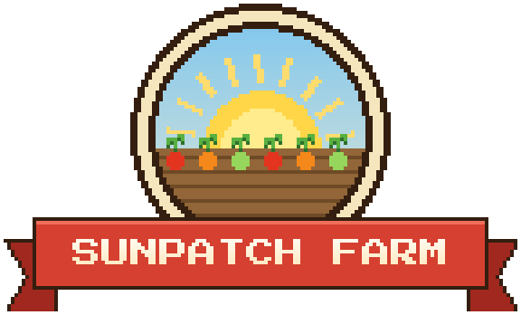
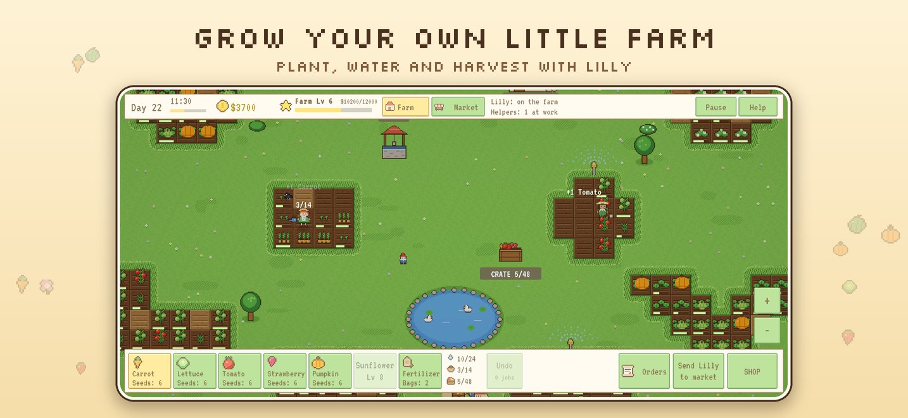
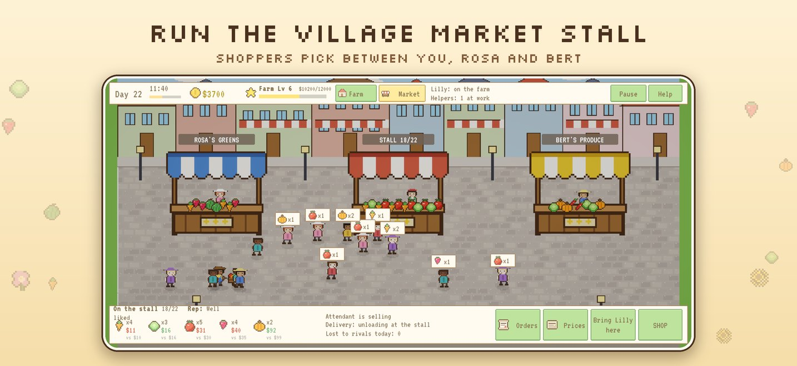
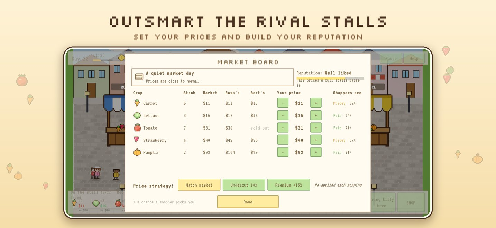
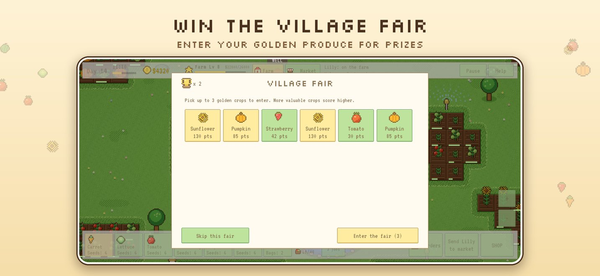
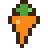

A cosy pixel-art farming game. Plant crops with Lilly, run a stall at the village market, outprice the rival stalls and work your way up to the Grand Greenhouse.
Download on the App Store Get help




Plant, water and harvest nine crops, from carrots to sunflowers and exotic orchids. Buy more beds as your farm grows.
Stock your stall and set your prices. Shoppers compare you with Rosa's and Bert's stalls, so a good deal wins them over.
Rare golden crops sparkle for a short time. Only Lilly can pick them. Sell them for a fortune or save them for the fair.
Fill orders for the bakery and the inn, chase off crows, hire helpers and win trophies at the Village Fair.